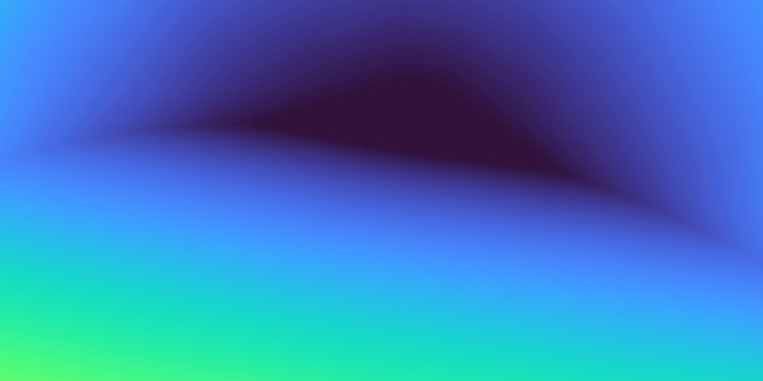
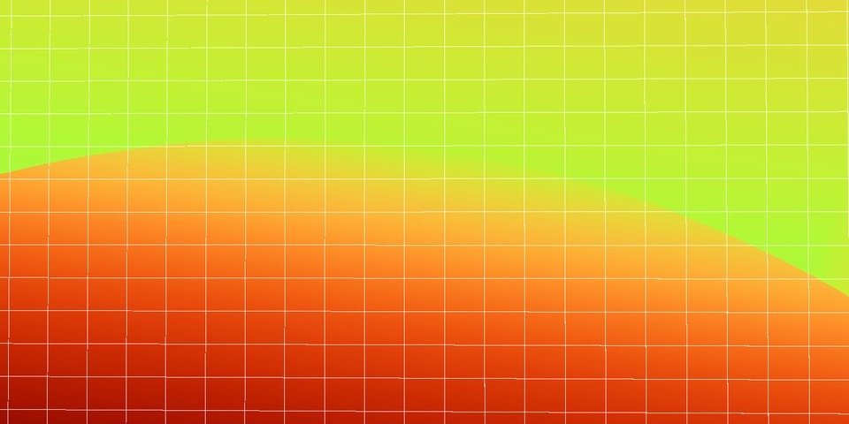
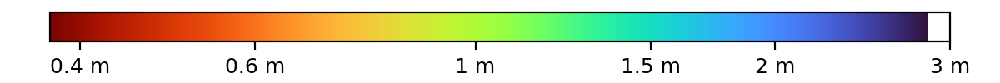
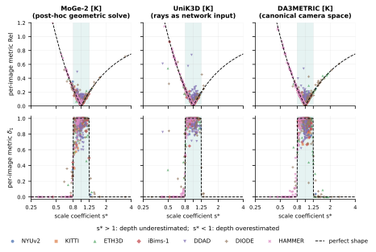
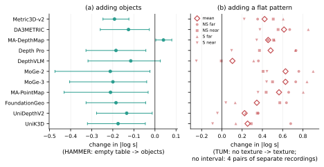
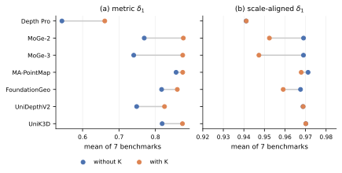

Same table, same model: objects can fix the scale, but not always



Empty table. Drag: left = ground truth, right = MoGe-2. MoGe-2 places the table 2.8× too far (δ1 0.00).
The geometry is right in all three: what the model lacks is a reliable cue for how big the scene is.
Why it matters
A robot that grasps, an AR app that places furniture, or a SLAM system initialised from one frame needs metres, not relative depth. A depth map with the right shape but 2.8× the wrong scale puts the cup out of reach. Dataset averages hide this: a model can score well on average while a fixed set of everyday views, such as an empty table or a blank wall, defeats it every time.
Most models fail on the same images
Pick an image and a model. Ground truth and prediction share one colour scale. White: no ground truth, or sky / invalid region as predicted by the model itself (MoGe-2, MoGe-3, MA-PointMap, FoundationGeo, DA3METRIC output such a mask; the other models do not). In almost all of these failures the shape is right and only the scale is off.
Where each model fails
The averages look similar across models; the failures do not. Most of them sit on DIODE and HAMMER, and on HAMMER almost every model errs in the same direction.
What averages do not show
Evaluations average a metric score and a scale-aligned score per dataset. DIMED keeps, for every image, the metric δ1, the scale-aligned δ1 and the alignment scale s*, and reports:
- Failure rate: how many images are badly wrong, not just the mean.
- Bias, stability, absolute error of ln s*: which way the scale is wrong and whether one global correction would fix it.
- Shared vs. model-specific failures: how many models fail on each image.

s* falls inside [0.8, 1.25] (shaded); errors in structure are small.Main results
18 model evaluations on the 7 everyday-scene benchmarks used by MoGe-2 (4,406 images), datasets weighted equally. Click a column to sort.
↑/↓: higher/lower is better; →0: closer to zero is better. Bias = mean(ln(1/s*)), positive = depth overestimated. Stability = std(ln s*) within a dataset.
Try it on your model. Evaluate it with our code, then split its errors by our per-image shared-failure labels, without re-running the 11 baselines:
git clone https://github.com/antigravity-tech/DIMED && cd DIMED/eval bash run.sh <your_model> 0 python ../analysis/stratify_new_model.py ../results/shared_failure_labels.csv <results>/main/<run>
Image content moves the scale

Intrinsics and model size help, but not enough

What to do with this
Code and data
- Code: github.com/antigravity-tech/DIMED. Adapters for 11 models on top of an unmodified MoGe evaluation, and scripts that recompute the paper's numbers.
- Data: huggingface.co/datasets/hljiang/DIMED. Per-image results of all 36 evaluations, per-image shared-failure labels, and two diagnostic sets derived from TUM RGB-D (514 + 215 images, CC BY 4.0).
Citation
@article{jiang2026dimed,
title = {What the Averages Hide: Monocular Metric Depth Models Still Fail in Everyday Scenes, Mostly on Scale},
author = {Jiang, Hualie and Luo, Yujie and Song, Ziyang and Li, Ximeng and Lou, Zhiqiang and Xu, Rui},
journal = {arXiv preprint arXiv},
year = {2026}
}